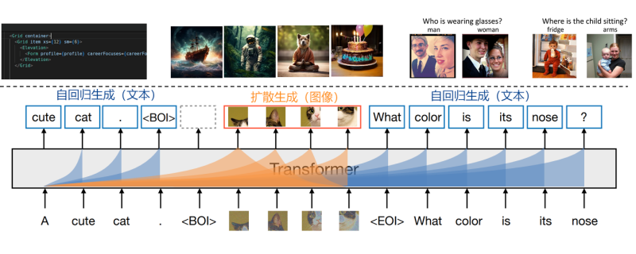
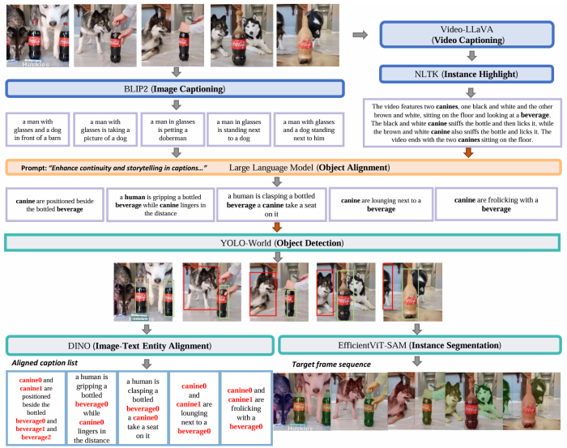
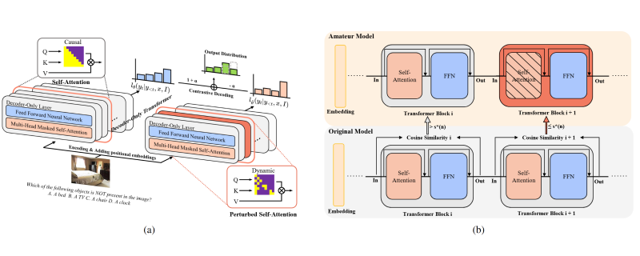

Overview
We aim to develop a comprehensive multimodal foundation model capable of handling a wide range of tasks across diverse modalities, including text, image, and video understanding and generation. The model will be designed for easy adaptation to various downstream applications and scenarios.
Our research will focus on advancing the architecture of the foundation model, optimizing multimodal training algorithms, improving inference accuracy and efficiency, and exploring real-world applications.
Multimodal Foundation Model Architecture
We construct a powerful large multimodal model that seamlessly integrates text and image understanding and generation using a unified transformer architecture. The model handles text generation (autoregressive), where it predicts sequential tokens to create coherent text, and image generation (diffusion-like), where it progressively refines image patches from encoded inputs. This cross-modal capability highlights the model's versatility in understanding and generating complex, multimodal content, making it well-suited for applications like content creation, visual reasoning, and interactive AI systems.
Openstory++ : A Large-scale Dataset and Benchmark for Instance-aware Open-domain Visual Storytelling
Recent image generation models excel at creating high-quality images from brief captions. However, they fail to maintain consistency of multiple instances across images when encountering lengthy contexts. This inconsistency is largely due to in existing training datasets the absence of granular instance feature labeling in existing training datasets. To tackle these issues, we introduce Openstory++, a large scale dataset combining additional instance-level annotations with both images and text. This dataset can be utilized to train multi-modal generated models, allowing for the training of instance-focused story visualization models. Furthermore, we develop a tailored training methodology that emphasizes entity-centric image-text generation, ensuring that the models learn to effectively interweave visual and textual information. Specifically, Openstory++ streamlines the process of keyframe extraction from open-domain videos, employing vision-language models to generate captions that are then polished by a large language model for narrative continuity. It surpasses previous datasets by offering a more expansive open-domain resource, which incorporates automated captioning, high-resolution imagery tailored for instance count, and extensive frame sequences for temporal consistency. Additionally, we present Cohere-Bench, a pioneering benchmark framework for evaluating the image generation tasks when long multimodal context is provided, including the ability to keep the background, style, instances in the given context coherent. Compared to existing benchmarks, our work fills critical gaps in multi-modal generation, propelling the development of models that can adeptly generate and interpret complex narratives in open-domain environments. Experiments conducted within Cohere-Bench confirm the superiority of Openstory++ in nurturing high-quality visual storytelling models, enhancing their ability to address sophisticated and open-domain generation tasks.
When Images Speak Louder: Mitigating Language Bias-induced Hallucinations in VLMs through Cross-Modal Guidance
Vision-Language Models (VLMs) have shown solid ability for multimodal understanding of both visual and language contexts. However, existing VLMs often face severe challenges of hallucinations, meaning that LVMs tend to generate responses that are only fluent in the language but irrelevant to images in previous contexts. To address this issue, we analyze how language bias contributes to hallucinations and then introduce Cross-Modal Guidance(CMG), a training-free decoding method that addresses the hallucinations by leveraging the difference between the output distributions of the original model and the one with degraded visual-language attention. In practice, we adaptively mask the attention weight of the most influential image tokens in selected transformer layers to corrupt the visual-language perception as a concrete type of degradation. Such a degradation-induced decoding emphasizes the perception of visual contexts and therefore significantly reduces language bias without harming the ability of VLMs. In experiment sections, we conduct comprehensive studies across various VLMs. All results demonstrate the superior advantages of CMG with neither additional conditions nor training costs. We also quantitatively show CMG can improve VLM's performance on hallucination-specific benchmarks and generalize effectively with significant margins.
